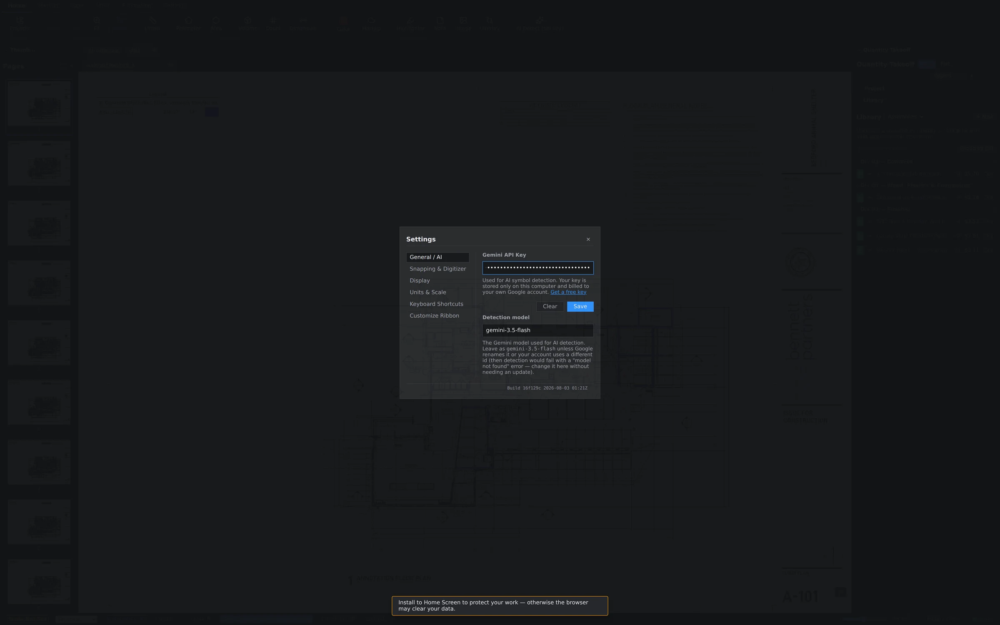
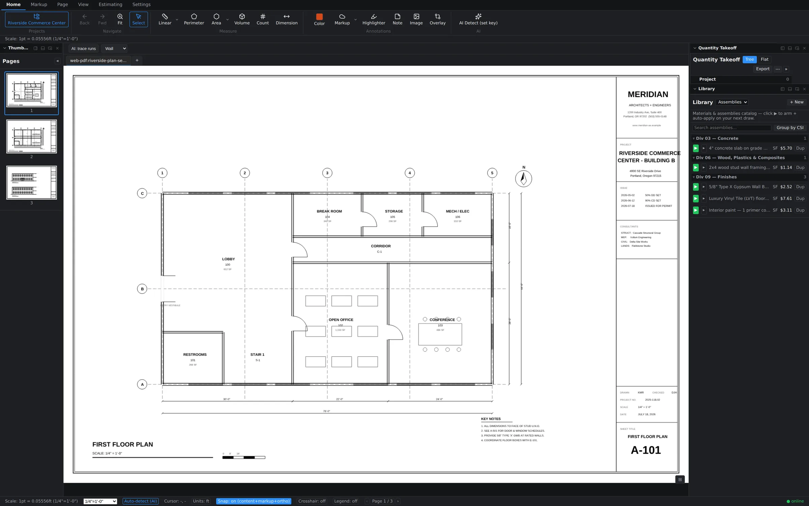
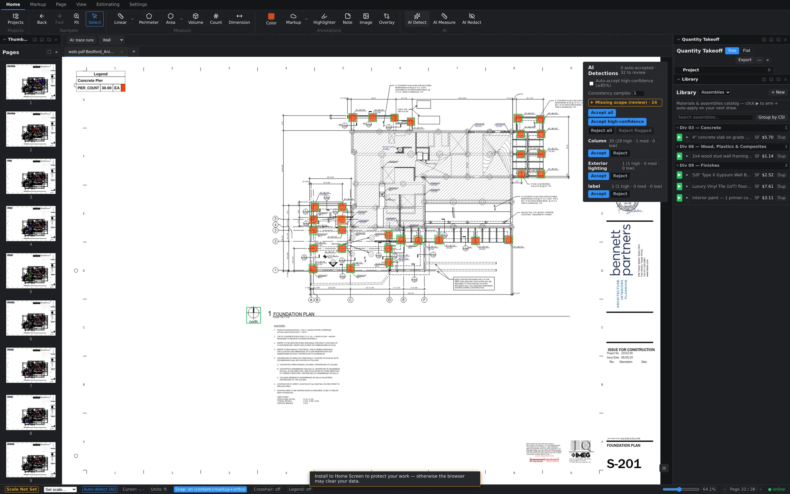

Counting by hand
The Count tool on the Home tab is one-click-one-marker: pick the tool, click each fixture, and every click drops a numbered marker and bumps the tally. Markers under the same subject stay grouped in the Quantity Takeoff tree, so "Workstations ×9" reads as one line with nine sheet locations behind it. For a dozen items, hand-counting is still the fastest thing in the app.

Before you use AI: bring a key
AI Detect runs on Google's Gemini models using your own API key, which you paste in under Settings → General → AI. There's no per-seat AI surcharge from us — usage bills directly to your Google account at their rates, and you keep full control of the spend. Until a key is configured, the AI features simply sit idle.

Running AI Detect
AI Detect lives at the right end of the Home ribbon. Tell it what you're counting, and it works the sheet in tiles — slicing the drawing into overlapping regions and scanning each one — so a symbol in the far corner of an E-size sheet gets the same scrutiny as one dead center.

Out of the box, AI Detect proposes counts — doors, fixtures, receptacles, piers, anything that repeats as a symbol. It does not draw your areas or volumes; those stay yours.
Review and approve
Every detection carries a confidence score, and the workflow is built around your judgment:
- Detections at 85% confidence or higher are auto-accepted and placed as count markers immediately.
- Lower-confidence finds are flagged for review instead of silently counted.
- The review panel gives you three levers: Accept all, Accept high-confidence, and Reject flagged — sweep the obvious ones in, throw the doubtful ones out, and spot-check anything in between.

Accepted detections become ordinary count markers — same tree rows, same editing, same undo as if you'd clicked them yourself. And if a run finds nothing, you'll get a status message saying so; no news is displayed news, never a silent shrug.
AI for linear work: trace runs
Counting isn't the only repetitive job. For linear scope, drag the region-scoped "AI: trace runs" marquee over a portion of the sheet and the AI proposes linear runs within just that region — useful for dense corridors of partition or long conduit and pipe routes. Scoping to a region keeps the results focused and quick to review.